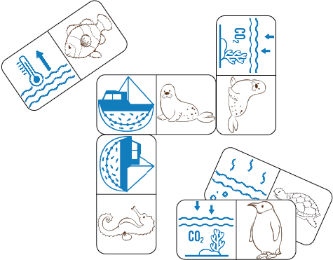
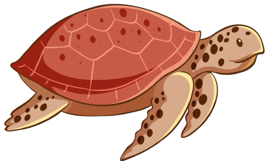

#IHelpedOurPlanet

DOWNLOAD PDF
Why play this game?
Ocean health is closely related to our health. To help save our biggest ecosystem and the innocent animals, we must make ocean-friendly choices. Amongst many things but by eliminating plastic waste and organizing beach cleanups.
More information can be found here.
What you will need

How to play:
Part 1
- Click the download button above to print the PDF and cut out the domino pieces
- Each player draws 5-7 pieces
- The shortest player begins by laying out a piece
- Match pictures with pictures as shown in the picture above
- If you cannot can't lay any pieces, draw in 1 pieces, if it does not match wait until the next round
- The person who finishes all their pieces first gets 10 points
- If no one is able to finish, the person with the least pieces left gets 5 points
Part 2
- Talk to an adult about going outside
- Put on clothes, gloves or other items according to the weather
- Bring trashbags and something to write on to keep score of your points
- Go to your nearest beach/sea (if you don't have one nearby, go in your local area)
- Gather all the trash you find, but be careful
- Bring all the trash back and ask an adult where to dispose it
- Add all your points to see who won!

| Task | Points |
|---|---|
| Help an animal | 25 points |
| Bottles to recycle | 5 points |
| Full trashbags | 10 points per bag |
| Things that need Recycling station | 20 points per item |
Tell your friends and show everyone you helped the planet with #IHelpedOurPlanet